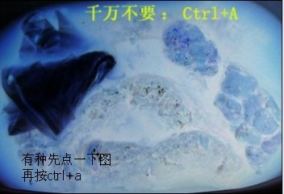

<!--
	作者：1173795632@qq.com
	时间：2020-05-14
	描述：filter 滤镜
	滤镜通常使用百分比 (如：75%), 当然也可以使用小数来表示 (如：0.75)。 图片变色
	主要用于音视频中，通过算法，调整图片颜色
-->
<!DOCTYPE html>
<html lang="en">
<head>
    <meta charset="UTF-8">
    <title>零玖玖教育 - ljj.cn </title>
    <meta name="author" content="零玖玖教育 - ljj.cn">
    <meta name="copyright" content="零玖玖教育 - ljj.cn">
    <meta name="description" content="零玖玖教育，是一家专注的前端开发培训的公司，是目前培训行业中最具口碑的机构。我们向学员提供了JavaScript、nodeJs、AngularJS、jQuery、HTML+CSS、HTML5+CSS3，移动端等课程。">
    <style>
        img{
            width: 70%;
            display: block;
            margin: 30px auto;

            /*-webkit-filter: brightness(.5)*/
            /*filter: contrast(.5);*/
            /*filter: grayscale(.5);*/
            /*filter: hue-rotate(0deg);*/
            /*filter: saturate(.5);*/
            /*filter: sepia(.5);*/
            /*filter: drop-shadow(x y radius color);*/
            /*filter: drop-shadow(30px 30px 20px red);*/
            box-shadow: 30px 30px 20px red;
        }

    </style>
</head>
<body>
    
    <!---->
</body>
</html>